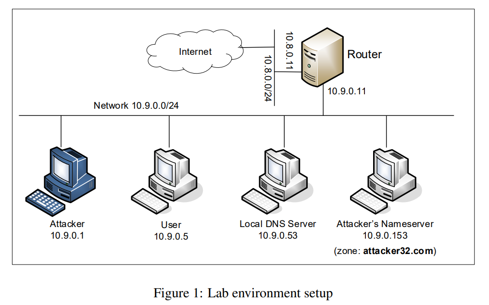
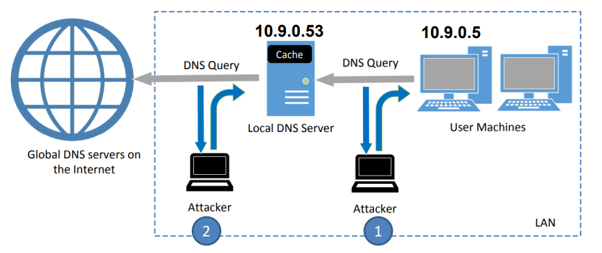

Adapted from SEED Labs: A Hands-on Lab for Security Education.
DNS (Domain Name System) is the Internet’s phone book; it translates hostnames to IP addresses (and vice versa). This translation is through DNS resolution, which happens behind the scene. DNS attacks manipulate this resolution process in various ways, with an intent to misdirect users to alternative destinations, which are often malicious. The objective of this lab is to understand how such attacks work. Students will first set up and configure a DNS server, and then they will try various DNS attacks on the target that is also within the lab environment
The difficulties of attacking local victims versus remote DNS servers are quite different. Therefore, we have developed two labs, one focusing on local DNS attacks, and the other on remote DNS attack. This lab focuses on local attacks.
This lab covers the following topics:
07_dns_attacks/ of our class’s GitHub repository.The main target for DNS cache poisoning attacks is local DNS server. Obviously, it is illegal to attack a real server, so we need to set up our own DNS server to conduct the attack experiments. The lab environment needs four separate machines: one for the victim, one for the local DNS server, and two for the attacker. The lab environment setup is illustrated in Figure 1. This lab focuses on the local attack, so we put all these machines on the same LAN.
Please ensure that you have the class repo cloned locally.
Once this is done, navigate to the 07_dns_attacks/ directory.
For example:
We will make use of Docker and Compose to make working with containers easy.
# First, build the container
$ docker-compose build # Build the container image
# Next, start/stop the container(s) as needed
$ docker-compose up -d # Start the container (-d runs container in the background; i.e., detached)
$ docker-compose down # Shut down the container
In general for our labs, we will create and start containers that will run in the background
(i.e., use the -d flag when bringing your container up).
At times we may need to run commands on a container — docker makes it pretty easy to attach to a container running in the background and get a shell on that container.
To run commands on a specific container, we first need to use the docker ps command to find out the ID of the container,
and then we can use docker exec to start a shell on that container.
(I told you this would be easy!)
$ docker ps -a # Show all containers (default shows just running)
$ dockps # Show active containers using custom formatting for docker ps
$ docksh <id> # Connect to container with <id>
### Examples ###
# The following example shows how to get a shell inside hostC
$ dockps
b1004832e275 hostA-10.9.0.5
0af4ea7a3e2e hostB-10.9.0.6
9652715c8e0a hostC-10.9.0.7
# Attach to the container with an ID that starts with "96"
$ docksh 96
root@9652715c8e0a:/#
# NOTE: If a docker command requires a container ID, you do not need to type the entire ID string.
# Typing the first few characters will be sufficient so long as it can uniquely identify a container.
Before starting to lab, you should make sure your containers are setup correctly. After starting the docker containers, you will need to log into the user container for 10.9.0.5 using docks, and run a series of commands
First, let’s run the following command to get an IP address of www.example.com. We should get the actual IP address, and the response should come from our own local DNS server 10.9.0.53. Please verify these.
root@5cfe7ee8a09f:/# dig www.example.com
...
;; ANSWER SECTION:
www.example.com. 86400 IN A 93.184.216.34
;; SERVER: 10.9.0.53#53(10.9.0.53)
root@5cfe7ee8a09f:/# dig www.attacker32.com
;; ANSWER SECTION:
www.attacker32.com. 259200 IN A 10.9.0.180
root@5cfe7ee8a09f:/# dig @ns.attacker32.com www.example.com
;; ANSWER SECTION:
www.example.com. 259200 IN A 1.2.3.5
;; SERVER: 10.9.0.153#53(10.9.0.153)
When a user types the name of a web site (a host name, such as www.example.com) in a web browser,
the user’s computer will send a DNS request to the local DNS server to resolve the IP address of the host
name. Attackers can sniff the DNS request message, they can then immediately create a fake DNS response,
and send back to the user machine. If the fake reply arrives earlier than the real reply, it will be accepted by
the user machine. See Figure 2 below).
Figure 2: Attack Surface for DNS Cache Poisoning Attacks

Using the Python script below (also can be found in our course repo), conduct a attack so that the client (10.9.0.5) will accept a spoofed DNS response and use our malicious IP address (1.2.3.4)
It should be noted that in the code above, the value for the iface argument should be
replaced with the actual interface name for the 10.9.0.0/24 network. When you run the Python program via the command line, you also need to provide the IP address of the device you are trying to attack (ie sudo python3 spoof_answer.py 10.9.0.5)
Before launching the attack, make sure that the cache in the local DNS server is cleaned. If the cache
has the answer, the reply from the local DNS server will be faster than the one you spoofed, and your attack
will not be able to succeed. To clear the cache, you can log into the local DNS server container (10.9.0.53) and run the following command:
# rndc flush
While the attack program is running, on the user machine (10.9.0.5), you can run dig command on behalf of the
user. This command triggers the user machine to send out a DNS query to the local DNS server, which
will eventually send out a DNS query to the authoritative nameserver of the example.com domain (if the
cache does not contain the answer). If your attack is successful, you should be able to see your spoofed
information (1.2.3.4) in the reply. Be sure to take a screenshot that shows the response of the dig command having the spoofed IP
# rndc flush
# rndc dumpdb -cache cat /var/cache/bind/dump.db | grep example.com
;; AUTHORITY SECTION: example.com. 259200 IN NS ns.attacker32.com.
9.9.9.9 www.csci476.com
Submit your assignment as a single PDF to the appropriate D2L dropbox